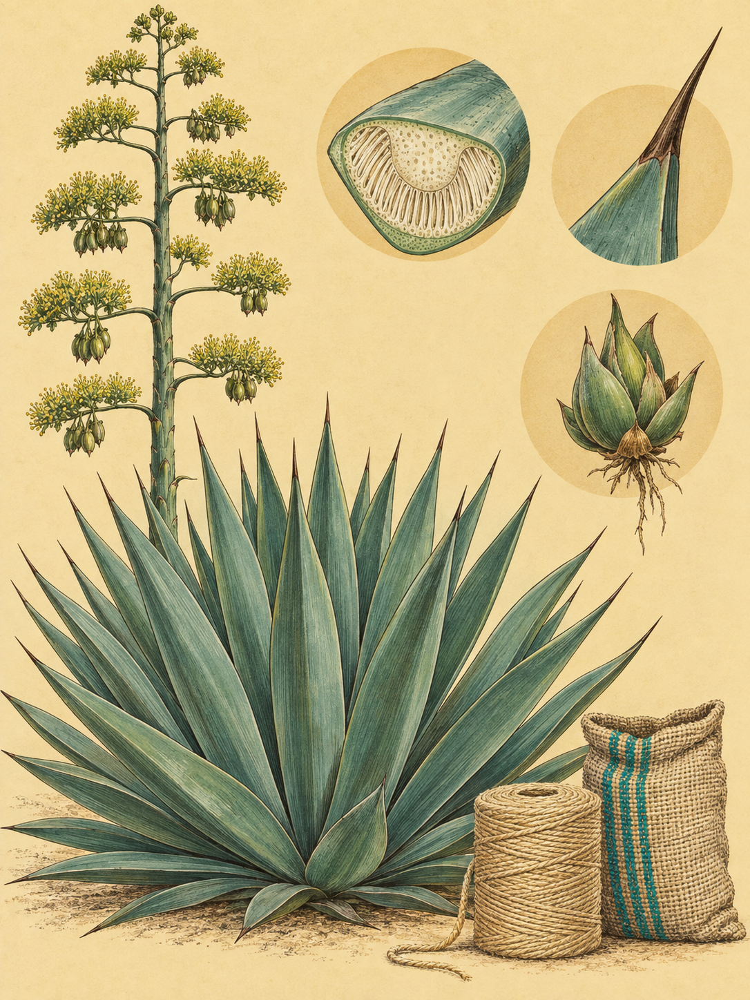

KÜSTE MOMBASA
Agave sisalana
Swahili: „Mkonge“, „Katani“; Maa: „Oldupai“; Samburu: „Lakitim“, „Lakitimo“; Kikuyu / Kamba: „Ikonge“; Giriama / Digo: „Konje“, „Mkonge“; Luganda: „Kigoogwa“

In den Sisalfeldern von Vipingo laufen die Rosetten in langen Linien zum Horizont und enden in schwarzen Spitzen.
Eine ausgewachsene Sisalagave bildet eine bodennahe Rosette aus schwertförmigen Blättern. Sie wird 1 bis 2 Meter hoch und erreicht einen Durchmesser von 1,5 bis 2,83 Metern. Die einzelnen Blätter können 0,54 bis 2 Meter lang werden. Bei jungen Pflanzen sind sie blaugrün bereift, später dunkler grün. Ihre Ränder sind glatt und unbewehrt. Nur an der Spitze sitzt ein harter, dunkelbrauner bis schwarzer Endstachel von 3 bis 5 Zentimetern Länge. Sieben bis zwölf Jahre wächst die Pflanze, dann schiebt sie aus der Mitte einen gewaltigen Blütenstand. Er kann 4 bis 14,3 Meter hoch werden. Danach stirbt die Mutterpflanze. Die Sisalagave blüht nur einmal, aber sie hinterlässt Klone und Brutknospen.
Das Wort Agave kommt aus dem Griechischen und bedeutet „edel“ oder „prächtig“. sisalana verweist auf Sisal, die mexikanische Hafenstadt, von der aus das ursprüngliche Pflanzenmaterial in der spanischen Kolonialzeit verschifft wurde. Henry Perrine beschrieb die Art 1838 in einem Antrag auf Landzuteilung für Südflorida. 2018 fanden Botaniker Perrines Originalbeleg aus Campeche und Reliktpopulationen in Yucatán. Damit war der Ursprung auf der Halbinsel und die Domestikation durch die Maya belegt. Ihre Geschichte beginnt also nicht in Kenia, sondern an einem Hafen auf Yucatán.
Die Pflanzen in den Feldern sind fast vollständig Klone. Die Sisalagave besitzt fünf Chromosomensätze und ist deshalb in der Natur nahezu steril. Samen und Fruchtkapseln entstehen in der Kultivierung praktisch nie. Stattdessen wachsen aus unterirdischen Rhizomen Wurzelschösslinge. Eine Pflanze bildet in ihrem Leben ungefähr 20 solcher Klone. Am Ende des Lebens entstehen am Blütenstand dicke, harte Brutknospen. Sie fallen zu Boden, schlagen Wurzeln und werden zu neuen Rosetten. Die Mutterpflanze stirbt nach diesem letzten Auftritt. Das ist keine Vermehrung durch Samen, sondern eine Staffelübergabe aus Blatt, Blütenstand und Klon.
Ihr wichtigster Schutz vor der Trockenheit liegt in einer ungewöhnlichen Tagesordnung. Die Sisalagave nutzt den Crassulaceen-Säurestoffwechsel, kurz CAM. Während der heißen, hellen Stunden bleiben die kleinen Spaltöffnungen an der Blattoberfläche geschlossen. So verliert die Pflanze nur wenig Wasser. Erst nachts, wenn die Temperatur sinkt und die Luft feuchter wird, öffnen sie sich. Kohlendioxid wird aufgenommen und in eine Säure umgewandelt, die vorübergehend in den großen Zellvakuolen lagert. Am folgenden Tag bleiben die Spaltöffnungen wieder geschlossen. Die gespeicherte Säure wird aufgespalten, das Kohlendioxid im Blatt freigesetzt und mit Sonnenenergie in Kohlenhydrate umgewandelt. Dadurch kann die Pflanze Umgebungstemperaturen bis 50 Grad Celsius überstehen und in nährstoffarmen, sandigen Böden ohne künstliche Bewässerung dichte Fasern aufbauen und weiterwachsen.
Diese Fasern sind kein loses Gespinst, sondern ein geordnetes Gerüst. Bündel knapp unter der Außenhaut geben dem schweren, fleischigen Blatt seine Steifigkeit. Andere verlaufen in der Blattmitte und schützen die Leitbahnen. Zur Spitze hin verdichten sie sich, verholzen und bilden den schwarzen Endstachel. Bei der Verarbeitung werden vor allem die mechanischen Fasern gewonnen, weil sie nicht splittern. Wasser verändert sie dennoch: Ein Teil der Faser nimmt Feuchtigkeit auf, dann dehnen sich die Fasern aus und verhärten. Was den Blättern Stand gibt, wird so zu einem Material für Seile und Säcke.
Die Wurzeln liegen flach, aber weit ausgebreitet. Sie bilden ein dichtes Netzwerk, das kurze Regenfälle in der obersten Bodenschicht sofort aufnimmt, und reichen meist 1,5 bis 5 Meter seitlich, jedoch nur 30 bis 40 Zentimeter tief. Die Pflanze wächst auf sandigem Lehm bis Ton, solange das Wasser abfließen kann. Mit dem Übergang von der langen Trockenzeit zur kleinen Regenzeit Ende September ändert sich ihr Zustand vermutlich. Das flache Wurzelsystem fängt das Sickerwasser auf, und die Blätter werden wieder praller. Die Sisalagave wartet nicht auf tiefe Quellen. Sie nimmt den kurzen Regen dort auf, wo er ankommt.
In Ostafrika wurde sie zur Exportpflanze. Der Anbau in Kenia begann zwischen 1903 und 1908. Fasern wurden zu Bindegarn, Schiffstauen, Kaffeesäcken und Teppichen verarbeitet. Die geraden, verholzten Blütenstände dienen als Dachgerüste, Zäune oder Brennholz. Lebende Reihen markieren Grundstücke, halten Weidetiere fern und schützen Hänge vor Erosion. Rund um Vipingo wird aus der einzelnen Rosette so eine Landschaft aus Linien. Die Pflanze steht dort nicht nur am Rand der Felder. Sie gibt den Feldern ihre Ordnung.
Wo Faser gewonnen wird, bleibt viel Pflanze zurück. In Entrindungsanlagen entsteht Abwasser, das aquatische Ökosysteme schädigen kann. Wird es unbehandelt in Flüsse geleitet, kann der Abbau der Biomasse den Sauerstoff aufbrauchen und Fische und andere Wassertiere ersticken. Neuere Verfahren versuchen, aus dem Rest wieder einen Kreislauf zu machen. Auch Biogas und Austernpilze sind mögliche Nutzungen des Restes. Aus einer stacheligen Rosette wird so eine Frage der Landwirtschaft, der Industrie und des Wassers.
Am frühen Morgen liegen die Plantagenreihen von Vipingo wieder im Streiflicht. Zwischen ihnen stehen Rosetten, deren Blätter Wasser für den heißen Tag bewahren. Jede schwarze Spitze zeigt nach außen, jede Nacht öffnet sich im Inneren ein Eingang für Kohlendioxid. Die Linien zum Horizont wirken still. Doch in jeder Pflanze läuft die nächste Schicht ihrer Geschichte bereits an.
Sisal prägt an der kenianischen Küste die Landschaft nördlich von Mombasa, besonders rund um Mtwapa Creek und die Vipingo Plantations. Dichte Reihen markieren Grundstücke, bremsen Erosion und halten Wild- und Weidetiere fern. Aus den Fasern entstehen Bindegarn, Schiffstaue, Kaffeesäcke und Teppiche. Die geraden Blütenstände werden als Dachgerüste, Zäune und Brennholz verwendet. In der traditionellen ostafrikanischen Heilkunde dienen Wurzelabsud als schweißtreibendes Mittel, Blattabsud als harntreibendes Mittel und Blattsaft bei Verstopfung oder äußerlich zur Desinfektion von Schnittwunden.
Ein überlieferter Name führt bis zur Olduvai-Schlucht in Tansania. „Olduvai“ gilt als Fehlübersetzung oder Fehlkalkulation von oldupai, dem Maa-Wort für scharfe Faserpflanzen wie den Sisal. Die Samburu nutzen wilden und angebauten Sisal für ihre nomadischen Behausungen und fertigen Matten aus Lakitim. In der Industrie ist besonders das Sapogenin Hecogenin wichtig. Es wird aus den Blättern gewonnen und dient als Ausgangsstoff für die partielle Herstellung von Kortikosteroiden wie Kortison, Hydrokortison und Prednison. Die Pflanze ist also zugleich Grenzzaun, Nutzfaser und Rohstoff für Arzneimittel.
Wo und wann: In den Vipingo Plantations früh am Morgen zwischen 06:30 und 08:00 Uhr die Gasse zwischen den Reihen wählen.
Brennweite: 26 bis 60 mm für die konvergierenden Plantagenlinien und die Rosette im Landschaftskontext.
Bild-Idee: Eine einzelne schwarze Blattspitze im Streiflicht vor den langen Sisalreihen verbindet die Wehrhaftigkeit der Pflanze mit ihrer Feldarbeit.